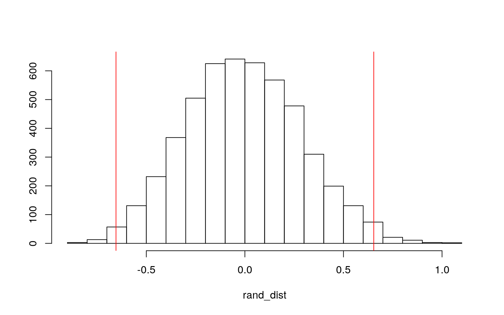

vgsales <- read_csv("vgsales.csv")In this investigation, I imported the vgsales dataset which highlights video game sales from 2014 to 2016 for the regions North America, Europe, and Japan. Within this dataset, the variables I am exploring include Name, Platform, Year, Genre, NA_Sales, EU_Sales, JP_Sales, Other_Sales, and Global_Sales with there being 292 total observations. Within these variables, “Name” represents the title of the individual video games and “Platform” represents the console names such as different variations of PlayStation, Xbox, Wii, and Nintendo DS consoles. Further, “Year” represents the year of the video game title release and “Genre” represents the genre of corresponding game. Lastly, NA_Sales, EU_Sales, JP_Sales, Other_Sales, and Global_Sales represents the sales of each video game title in millions within North America, Europe, Japan, all other regions, and total global sales respectively.
man1 <- manova(cbind(NA_Sales, EU_Sales, JP_Sales, Other_Sales)~Genre, data=vgsales)
summary(man1)## Df Pillai approx F num Df den Df Pr(>F)
## Genre 7 0.32661 3.4676 28 1092 4.46e-09 ***
## Residuals 273
## ---
## Signif. codes: 0 '***' 0.001 '**' 0.01 '*' 0.05 '.' 0.1
' ' 1I performed a MANOVA test to determine if one of my variables were significant or not. From this test, it can be seen that there is in fact at least one variable that is significant since the returned p-value was found to be 9.011e-08, thus causing me to next perform univariate ANOVA tests.
As there are several MANOVA test assumptions, it is likely that, while most of the test assumptions have been met, some of them were not met within this investigation. For instance, while the Action and Role-Playing genres very clearly each had over 25 observations, the other genres may not have had as many observations. Further, data being analyzed likely did meet the random samples and independent observations assumptions and the homogeneity of within-group covariance matrices assumptions. Lastly, there does appear to be a linear relationship among the dependent variables, are no obvious extreme univariate or multivariate outliers, and the dependent variables do not seem to have multicollinearity. Consequently, most of the MANOVA assumptions are most likely to have been met during this test.
summary.aov(man1)## Response NA_Sales :
## Df Sum Sq Mean Sq F value Pr(>F)
## Genre 7 20.959 2.99413 5.3147 1.029e-05 ***
## Residuals 273 153.799 0.56337
## ---
## Signif. codes: 0 '***' 0.001 '**' 0.01 '*' 0.05 '.' 0.1
' ' 1
##
## Response EU_Sales :
## Df Sum Sq Mean Sq F value Pr(>F)
## Genre 7 25.245 3.6065 5.0585 2.051e-05 ***
## Residuals 273 194.639 0.7130
## ---
## Signif. codes: 0 '***' 0.001 '**' 0.01 '*' 0.05 '.' 0.1
' ' 1
##
## Response JP_Sales :
## Df Sum Sq Mean Sq F value Pr(>F)
## Genre 7 0.977 0.13960 1.1173 0.3523
## Residuals 273 34.109 0.12494
##
## Response Other_Sales :
## Df Sum Sq Mean Sq F value Pr(>F)
## Genre 7 2.731 0.39014 4.9406 2.815e-05 ***
## Residuals 273 21.558 0.07897
## ---
## Signif. codes: 0 '***' 0.001 '**' 0.01 '*' 0.05 '.' 0.1
' ' 1From the conducted univariate ANOVA tests, it can be seen that the mean differences across NA_Sales (p-value=1.029e-05), EU_Sales (p-value=2.051e-05), and Other_Sales (p-value=2.815e-05) are significant. However, the mean difference across JP_Sales was not found to be significant as it only had a p-value of 0.3523.
pairwise.t.test(vgsales$NA_Sales,vgsales$Genre, p.adj= "none")##
## Pairwise comparisons using t tests with pooled SD
##
## data: vgsales$NA_Sales and vgsales$Genre
##
## Action Fighting Misc Platform Racing Role-Playing
Shooter
## Fighting 0.4870 - - - - - -
## Misc 0.8587 0.5245 - - - - -
## Platform 0.6958 0.8676 0.6679 - - - -
## Racing 0.5953 0.9444 0.5944 0.9261 - - -
## Role-Playing 0.9937 0.5113 0.8608 0.7093 0.6126 - -
## Shooter 3.4e-08 0.0032 0.0007 0.0055 0.0060 5.1e-07 -
## Sports 0.4909 0.9502 0.5401 0.9054 0.9874 0.5202 0.0010
##
## P value adjustment method: nonepairwise.t.test(vgsales$EU_Sales,vgsales$Genre, p.adj = "none")##
## Pairwise comparisons using t tests with pooled SD
##
## data: vgsales$EU_Sales and vgsales$Genre
##
## Action Fighting Misc Platform Racing Role-Playing
Shooter
## Fighting 0.53690 - - - - - -
## Misc 0.82908 0.78975 - - - - -
## Platform 0.95090 0.63198 0.83698 - - - -
## Racing 0.17445 0.12769 0.23723 0.34060 - - -
## Role-Playing 0.45415 0.88639 0.84752 0.65554 0.08861 - -
## Shooter 5.7e-05 0.00174 0.01128 0.02719 0.27963 2.2e-05
-
## Sports 0.00045 0.00223 0.01074 0.02374 0.21588 0.00016
0.72859
##
## P value adjustment method: nonepairwise.t.test(vgsales$Other_Sales,vgsales$Genre, p.adj = "none")##
## Pairwise comparisons using t tests with pooled SD
##
## data: vgsales$Other_Sales and vgsales$Genre
##
## Action Fighting Misc Platform Racing Role-Playing
Shooter
## Fighting 0.62634 - - - - - -
## Misc 0.69372 0.97492 - - - - -
## Platform 0.66392 0.98930 0.96685 - - - -
## Racing 0.79780 0.58171 0.62557 0.60330 - - -
## Role-Playing 0.30763 0.88604 0.86771 0.91350 0.42897 - -
## Shooter 2.4e-05 0.00166 0.00488 0.00543 0.02638 3.5e-06
-
## Sports 0.00427 0.01326 0.02410 0.02477 0.08649 0.00083
0.68950
##
## P value adjustment method: noneAs NA_Sales, EU_Sales, and Other_Sales were found to be significant through the univariate ANOVA test, I performed pairwise t-tests to further see if the mean differences between each genre differed for each of the three regions.
(1-(0.95^89))## [1] 0.9895912(.05/89)## [1] 0.0005617978pairwise.t.test(vgsales$NA_Sales,vgsales$Genre, p.adj = "bonferroni")##
## Pairwise comparisons using t tests with pooled SD
##
## data: vgsales$NA_Sales and vgsales$Genre
##
## Action Fighting Misc Platform Racing Role-Playing
Shooter
## Fighting 1.000 - - - - - -
## Misc 1.000 1.000 - - - - -
## Platform 1.000 1.000 1.000 - - - -
## Racing 1.000 1.000 1.000 1.000 - - -
## Role-Playing 1.000 1.000 1.000 1.000 1.000 - -
## Shooter 9.6e-07 0.091 0.020 0.154 0.168 1.4e-05 -
## Sports 1.000 1.000 1.000 1.000 1.000 1.000 0.028
##
## P value adjustment method: bonferronipairwise.t.test(vgsales$EU_Sales,vgsales$Genre, p.adj = "bonferroni")##
## Pairwise comparisons using t tests with pooled SD
##
## data: vgsales$EU_Sales and vgsales$Genre
##
## Action Fighting Misc Platform Racing Role-Playing
Shooter
## Fighting 1.00000 - - - - - -
## Misc 1.00000 1.00000 - - - - -
## Platform 1.00000 1.00000 1.00000 - - - -
## Racing 1.00000 1.00000 1.00000 1.00000 - - -
## Role-Playing 1.00000 1.00000 1.00000 1.00000 1.00000 - -
## Shooter 0.00158 0.04886 0.31583 0.76118 1.00000 0.00061
-
## Sports 0.01262 0.06242 0.30084 0.66465 1.00000 0.00440
1.00000
##
## P value adjustment method: bonferronipairwise.t.test(vgsales$Other_Sales,vgsales$Genre, p.adj = "bonferroni")##
## Pairwise comparisons using t tests with pooled SD
##
## data: vgsales$Other_Sales and vgsales$Genre
##
## Action Fighting Misc Platform Racing Role-Playing
Shooter
## Fighting 1.00000 - - - - - -
## Misc 1.00000 1.00000 - - - - -
## Platform 1.00000 1.00000 1.00000 - - - -
## Racing 1.00000 1.00000 1.00000 1.00000 - - -
## Role-Playing 1.00000 1.00000 1.00000 1.00000 1.00000 - -
## Shooter 0.00066 0.04661 0.13658 0.15215 0.73851 9.9e-05
-
## Sports 0.11960 0.37120 0.67476 0.69361 1.00000 0.02319
1.00000
##
## P value adjustment method: bonferroniFrom the pairwise t-tests, the probability of a type I error was found to be 0.9895912, or 98.96% and the adjusted significance level was equal to 0.0005617978.
Using this, I then conducted the bonferroni corrected pairwise t-tests and found that for NA_Sales the mean differences between the genres Shooter and Action, Shooter and Misc, Shooter and Role-Playing, and Sports and Shooter were significant.
Then, for EU_Sales the mean differences between the genres Shooter and Action, Shooter and Fighting, Shooter and Role-Playing, Sports and Action, and Sports and Role-Playing were significant.
Lastly, for Other_Sales the mean differences between the genres Shooter and Action, Shooter and Fighting, Shooter and Role-Playing, and Sports and Role-Playing were significant.
From these mean differences, it is interesting to note that across all three regions investigated, only Shooter and Sports video games displayed mean differences across other genres that were found to be significant. This could possibly be explained by these genres having more overall sales within each region in comparison to other genres.
new_vgsales <- vgsales %>% filter(Genre == "Sports" | Genre == "Shooter")
rand_dist <- vector()
for(i in 1:5000){
new_vgsales1 <- data.frame(NA_Sales=sample(new_vgsales$NA_Sales),Genre=new_vgsales$Genre)
rand_dist[i] <- mean(new_vgsales1[new_vgsales1$Genre=="Sports",]$NA_Sales)-mean(new_vgsales1[new_vgsales1$Genre=="Shooter",]$NA_Sales)
}
new_vgsales %>% group_by(Genre) %>% summarize(means=mean(NA_Sales)) %>% summarize('mean_diff' = diff(means))## # A tibble: 1 x 1
## mean_diff
## <dbl>
## 1 -0.654mean(rand_dist > 0.6537104 | rand_dist < -0.6537104)## [1] 0.021{hist(rand_dist,main="",ylab=""); abline(v = c(-0.6537104, 0.6537104),col="red")} From the pairwise t-tests conducted for NA_Sales vs. Genre, I noticed that there was a significant p-value associated with the mean difference between Sports and Shooter video games. As a result, I chose to investigate these results further and performed a mean difference randomization test on this specific subset of my data. During this randomization test, my null hypothesis stated that mean NA_Sales are the same for Sports vs. Shooter games while my alternative hypothesis stated that mean NA_Sales are different for Sports vs. Shooter games. Through this randomization test, it can be seen that the p-value for the model was found to be 0.0218, thus causing the mean difference in NA_Sales to be significant between the two genres. Then, by creating a plot visualizing the null distribution and the test statistic (mean difference), it can be seen that the majority of the data falls within the two extremes of the actual test statistic, thus causing the actual mean difference to be large enough to suggest that the association between NA_Sales and Sports games and NA_Sales and Shooter games is not due to chance. Further, in this sampling distribution it can be seen that the probability of getting a mean difference at least as big as 0.6537104 is less than 0.05. Thus, using this randomization test, the null hypothesis would be rejected and it can be concluded that mean NA_Sales are different for Sports vs. Shooter games.
new_vgsales3 <- vgsales %>% mutate(new_year = (as.factor(Year)))
new_vgsales3$NA_Sales_c <- new_vgsales3$NA_Sales - mean(new_vgsales3$NA_Sales)
new_vgsales3$EU_Sales_c <- new_vgsales3$EU_Sales - mean(new_vgsales3$EU_Sales)
new_vgsales3$JP_Sales_c <- new_vgsales3$JP_Sales - mean(new_vgsales3$JP_Sales)
new_vgsales3$Other_Sales_c <- new_vgsales3$Other_Sales - mean(new_vgsales3$Other_Sales)
new_vgsales3$Global_Sales_c <- new_vgsales3$Global_Sales - mean(new_vgsales3$EU_Sales)
fit <- lm(NA_Sales_c ~ EU_Sales_c * Genre, data=new_vgsales3)
summary(fit)##
## Call:
## lm(formula = NA_Sales_c ~ EU_Sales_c * Genre, data =
new_vgsales3)
##
## Residuals:
## Min 1Q Median 3Q Max
## -1.07102 -0.10299 -0.03763 0.06691 2.35857
##
## Coefficients:
## Estimate Std. Error t value Pr(>|t|)
## (Intercept) -0.05050 0.03742 -1.349 0.17834
## EU_Sales_c 0.69267 0.05172 13.394 < 2e-16 ***
## GenreFighting 0.68767 0.11801 5.827 1.63e-08 ***
## GenreMisc -0.01942 0.11636 -0.167 0.86756
## GenrePlatform 0.10269 0.12233 0.839 0.40196
## GenreRacing -0.19471 0.11532 -1.688 0.09250 .
## GenreRole-Playing 0.14057 0.06369 2.207 0.02817 *
## GenreShooter 0.19570 0.07263 2.694 0.00750 **
## GenreSports -0.02655 0.09188 -0.289 0.77282
## EU_Sales_c:GenreFighting 1.67726 0.24986 6.713 1.16e-10
***
## EU_Sales_c:GenreMisc -0.09138 0.21380 -0.427 0.66944
## EU_Sales_c:GenrePlatform 0.20151 0.38552 0.523 0.60162
## EU_Sales_c:GenreRacing 0.38214 0.18433 2.073 0.03913 *
## EU_Sales_c:GenreRole-Playing 0.28447 0.09108 3.123
0.00199 **
## EU_Sales_c:GenreShooter 0.29345 0.07369 3.982 8.83e-05
***
## EU_Sales_c:GenreSports -0.59678 0.07116 -8.387 3.00e-15
***
## ---
## Signif. codes: 0 '***' 0.001 '**' 0.01 '*' 0.05 '.' 0.1
' ' 1
##
## Residual standard error: 0.3713 on 265 degrees of
freedom
## Multiple R-squared: 0.791, Adjusted R-squared: 0.7791
## F-statistic: 66.85 on 15 and 265 DF, p-value: < 2.2e-16In this linear regression model, I observed the interaction between EU_Sales and Genre to predict mean NA_Sales as I wanted to see if there was any relationship between the two regions of video game sales when genre varied. From this model it can be seen that under control of the Action genre and at the mean value for EU_Sales, NA_Sales is -0.5050 million below the mean NA_Sales. Further, for every increase of 1 million in mean EU_Sales, mean NA_Sales increases by 0.69267 million when compared to the Action Genre conditions. Using this model it can also be seen that at any given genre and at the mean value for EU_Sales, the mean NA_Sales is the value of the coefficient estimate higher or lower compared to the Action controlled genre conditions. For instance, for the fighting genre and at a mean value for EU_Sales, the mean NA_Sales is 0.68767 higher as compared to the controlled Action genre conditions. Furthermore, the effect of mean EU_Sales on mean NA_Sales is higher or lower by the coefficient estimate under genre conditions as compared to the control condition. For instance, the effect of mean EU_Sales on mean NA_Sales is 1.67726 million higher under the Fighting genre condition as compared to the Action Genre control condition. In other words, for the Fighting genre, the slope of mean EU_Sales and mean NA_Sales is 0.68767 + 1.67726 = 2.36493 million. Lastly, it can be seen that the R^2 value indicates that 79.1% of the variability in mean NA_Sales can be explained by this model.
new_vgsales3 %>% select(NA_Sales_c, EU_Sales_c, Genre) %>% na.omit %>% ggplot(aes(EU_Sales_c, NA_Sales_c, color=Genre)) + geom_point()+geom_smooth(method="lm")+ geom_vline(xintercept=mean(new_vgsales3$EU_Sales_c),na.rm=T,lty=2)resids <- fit$residuals
fitvals <- fit$fitted.values
ggplot() + geom_point(aes(fitvals, resids)) + geom_hline(yintercept=0, color="red")ks.test(resids, "pnorm", mean=0, sd(resids))##
## One-sample Kolmogorov-Smirnov test
##
## data: resids
## D = 0.18748, p-value = 5.271e-09
## alternative hypothesis: two-sidedFrom checking the assumptions graphically, it can be seen that this model fails the assumptions of normality as the One-sample Kolmogorov-Smirnov test shows the model having a p-value of 5.271e-09, thus causing me to reject the null hypothesis which states that the linear regression model is normally distributed. Further, this linear regression model also violates the assumption of homoskedasticity as the shape of the graph fans out. However, as there is no apparent pattern (such as curving) within this graph, the model does not violate linearity.
coeftest(fit, vcov = vcovHC(fit))##
## t test of coefficients:
##
## Estimate Std. Error t value Pr(>|t|)
## (Intercept) -0.050498 0.026900 -1.8772 0.061583 .
## EU_Sales_c 0.692668 0.078467 8.8275 < 2.2e-16 ***
## GenreFighting 0.687673 0.127031 5.4134 1.385e-07 ***
## GenreMisc -0.019422 0.147780 -0.1314 0.895537
## GenrePlatform 0.102690 0.106415 0.9650 0.335426
## GenreRacing -0.194715 0.101846 -1.9119 0.056973 .
## GenreRole-Playing 0.140574 0.102160 1.3760 0.169976
## GenreShooter 0.195700 0.083168 2.3531 0.019350 *
## GenreSports -0.026552 0.139470 -0.1904 0.849160
## EU_Sales_c:GenreFighting 1.677265 0.272341 6.1587
2.708e-09 ***
## EU_Sales_c:GenreMisc -0.091377 0.381204 -0.2397 0.810743
## EU_Sales_c:GenrePlatform 0.201509 0.324089 0.6218
0.534627
## EU_Sales_c:GenreRacing 0.382144 0.745183 0.5128 0.608505
## EU_Sales_c:GenreRole-Playing 0.284467 0.251592 1.1307
0.259216
## EU_Sales_c:GenreShooter 0.293451 0.108763 2.6981
0.007422 **
## EU_Sales_c:GenreSports -0.596781 0.090461 -6.5971
2.267e-10 ***
## ---
## Signif. codes: 0 '***' 0.001 '**' 0.01 '*' 0.05 '.' 0.1
' ' 1From the linear regression model with robust standard errors via the coeftest(…, vcoc=vcocHC(…)), it is seen that the effects on mean NA_Sales for the the Role-Playing genre when at a mean value for EU_Sales is no longer significant. Further, while the effects on mean NA_Sales for the Shooter genre when at a mean value for EU_Sales is still significant, it is now slightly less significant that in the original linear regression model. Moreover, it can be seen that the after the robust SEs has been applied, the effect of mean EU_Sales on mean NA_Sales for the Racing and Role-Playing genres are no longer significant. Lastly, while the effect of mean EU_Sales on mean NA_Sales for the Shooter genre is still significant, it is now slightly less significant than in the original linear regression model.
samp_distn <- replicate(5000, {
boot_dat <- sample_frac(new_vgsales3, replace = T)
fit2 <- lm(NA_Sales_c ~ EU_Sales_c * Genre, data = boot_dat)
coef(fit2)
})
samp_distn %>% t %>% as.data.frame %>% summarize_all(sd)## (Intercept) EU_Sales_c GenreFighting GenreMisc
GenrePlatform GenreRacing GenreRole-Playing
## 1 0.02607362 0.06634601 0.2288687 0.1524186 0.1067211
0.09683164 0.09091303
## GenreShooter GenreSports EU_Sales_c:GenreFighting
EU_Sales_c:GenreMisc EU_Sales_c:GenrePlatform
## 1 0.0802885 0.1484461 0.5367536 NA 0.315369
## EU_Sales_c:GenreRacing EU_Sales_c:GenreRole-Playing
EU_Sales_c:GenreShooter
## 1 NA 0.2100465 0.131473
## EU_Sales_c:GenreSports
## 1 0.234956From the regression model computed with bootstrapped standard errors as compared to the original regression, the standard errors for the effects of EU_Sales_c, GenreFighting, GenreMisc, GenreRole-Playing, GenreShooter, and GenreSports increased and the standard errors for the interactions of EU_Sales_c:GenreFighting, EU_Sales_c:GenreMisc, EU_Sales_c:GenreRacing, EU_Sales_c:GenreRole-Playing, EU_Sales_c:GenreShooter, and EU_Sales_c:GenreSports increased. This means that the p-value using these SEs is higher when compared to the original SEs. The other effects and interactions decreased in SE values from the bootstrapped standard errors as compared to the original regression, thus meaning that the p-value for these SEs decreased.
Next, from the regression model computed with bootstrapped standard errors as compared to the regression model with robust SEs, the standard errors for the effects of GenreFighting and GenreSports increased and the standard errors for the interactions of EU_Sales_c:GenreFighting, EU_Sales_c:GenreShooter, and EU_Sales_c:GenreSports increased. This means that the p-value using these SEs is higher when compared to the original SEs. The other effects and interactions decreased in SE values from the bootstrapped standard errors as compared to the original regression, thus meaning that the p-value for these SEs decreased.
new_vgsales4 <- vgsales %>% mutate(y=ifelse(Platform=="PS4",1,0))
new_vgsales4_fit <- glm(y ~ NA_Sales + EU_Sales, data=new_vgsales4, family=binomial(link="logit"))
exp(coef(new_vgsales4_fit))## (Intercept) NA_Sales EU_Sales
## 0.4942208 0.2361657 8.5875714By creating a logistic regression model, I was able to predict the odds of the video game platform being a PS4 from the explanatory variables of NA_Sales and EU_Sales. From this model, it can be seen that for every 1 million increase in NA_Sales while controlling for EU_Sales, the odds of the platform of the video game being PS4 is multiplied by the coefficient estimate of 0.2361657. It can also be seen that for every 1 million increase in EU_Sales while controlling for NA_Sales, the odds of the platform of video game being PS4 is multiplied by the coefficient estimate of 8.5875714. These coefficient estimates show that EU_Sales have a greater positive impact on the odds of the platform of the video game being PS4 as compares to NA_Sales.
probability <- predict(new_vgsales4_fit, type = "response")
class_diag(probability, new_vgsales4$y)## acc sens spec ppv auc
## 1 0.6975089 0.3760684 0.9268293 0.7857143 0.7667292table(predict = as.numeric(probability > 0.5), truth = new_vgsales4$y) %>%
addmargins## truth
## predict 0 1 Sum
## 0 152 73 225
## 1 12 44 56
## Sum 164 117 281From the confusion matrix for the logistic regression, it is seen that the Accuracy for the model, otherwise known as the proportion of correctly classified cases is 0.6975089. Next, the Sensitivity of the model, which represents the proportion of non-PS4 platforms correctly classified is 0.3760684. Then, the Specificity of the model, also known as the proportion of PS4 platforms correctly classified is 0.9268293. Further, the Precision of the model, which represents the proportion of classified non-PS4 platforms that actually are non-PS4 platforms is 0.7857143. Lastly, the AUC of the model, which shows that the probability that a randomly selected video game on the PS4 platform has a higher predicted probability than a randomly selected video game on a non-PS4 platform, was found to be 0.7667292. Therefore, the AUC of the model is considered to be fair.
new_vgsales4 <- new_vgsales4 %>% mutate(Platform=ifelse(y==1, "PS4", "non-PS4"))
new_vgsales4$logit <- predict(new_vgsales4_fit, type="link")
new_vgsales4 %>% mutate(Platform=as.factor(Platform)) %>% ggplot() + geom_density(aes(logit, fill=Platform), alpha=0.4) + theme(legend.position=c(0.85, 0.85)) + xlab("logit(log-odds)") + geom_vline(xintercept=0)plot <- ggplot(new_vgsales4) + geom_roc(aes(d=y, m=NA_Sales + EU_Sales), n.cuts=0)
plotcalc_auc(plot)## PANEL group AUC
## 1 1 -1 0.6099385From the generated ROC plot, the trade-off between sensitivity (true positive rate) and specificity (true negative rate, otherwise known as the false positive rate) can be visualized. Further, the AUC of the plot was found to be 0.6099385, thus causing the AUC to be considered to be poor. This means that it is hard to predict whether a video game was on the PS4 platform or not from just NA_Sales and EU_Sales.
new_vgsales5 <- new_vgsales4 %>% mutate(new_year = (as.factor(Year)))
new_vgsales5 <- new_vgsales5 %>% select(y, JP_Sales, Other_Sales, new_year, Genre)
new_vgsales5_fit <- glm(y~ JP_Sales + Other_Sales + new_year + Genre, data=new_vgsales5, family=binomial(link="logit"))
probability2 <- predict(new_vgsales5_fit, type="response")
class_diag(probability2, new_vgsales5$y)## acc sens spec ppv auc
## 1 0.7508897 0.6239316 0.8414634 0.7373737 0.8227538From the confusion matrix for the logistic regression, it is seen that the Accuracy for the model, otherwise known as the proportion of correctly classified cases is 0.7508897. Next, the Sensitivity of the model, which represents the proportion of non-PS4 platforms correctly classified is 0.6239316. Then, the Specificity of the model, also known as the proportion of PS4 platforms correctly classified is 0.8414634. Further, the Precision of the model, which represents the proportion of classified non-PS4 platforms that actually are non-PS4 platforms is 0.7373737. Lastly, the AUC of the model, which shows that the probability that a randomly selected video game on the PS4 platform has a higher predicted probability than a randomly selected video game on a non-PS4 platform, was found to be 0.8227538. Therefore, the AUC of the model is considered to be fair.
set.seed(1234)
k=10
data <- new_vgsales5[sample(nrow(new_vgsales5)),]
folds <- cut(seq(1:nrow(new_vgsales5)),breaks=k, labels=F)
diags <- NULL
for(i in 1:k){
train <- data[folds!=i,]
test <- data[folds==i,]
truth <- test$y
fit <- glm(y~ JP_Sales + Other_Sales + new_year + Genre, data=train, family=binomial(link="logit"))
probs <- predict(fit, newdata=test, type="response")
diags <- rbind(diags,class_diag(probs,truth))
}
summarize_all(diags,mean)## acc sens spec ppv auc
## 1 0.6903941 0.5247804 0.8149155 0.6522872 0.7908715From the confusion matrix for the logistic regression, it is seen that the Accuracy for the model is 0.6903941 which is lower than the Accuracy of the previous model which was found to be 0.7508897. Next, the Sensitivity of the model is 0.5247804 which is lower than the Sensitivity of the previous model which was found to be 0.6239316. Then, the Specificity of the model is 0.8149155 which is lower than the Specificity of the previous model which was found to be 0.8414634. Further, the Precision of the model is 0.6522872 which is lower than the Precision of the previous model which was found to be 0.7373737. Lastly, the AUC of the model is 0.7908715 which is lower than the AUC of the previous model which was found to be 0.8227538. Therefore, the AUC of the current model is considered to be fair which is worse than the AUC of the previous model which was considered to be good.
y <- as.matrix(new_vgsales5$y)
x <- model.matrix(y~., data=new_vgsales5)[,-1]
cv <- cv.glmnet(x,y,family="binomial")
lasso <- glmnet(x,y,family="binomial", lambda=cv$lambda.1se)
coef(lasso)## 12 x 1 sparse Matrix of class "dgCMatrix"
## s0
## (Intercept) -0.8292162
## JP_Sales -0.8807553
## Other_Sales 2.2225532
## new_year2015 0.2880258
## new_year2016 0.8649955
## GenreFighting .
## GenreMisc -0.6457282
## GenrePlatform .
## GenreRacing 0.1808424
## GenreRole-Playing .
## GenreShooter .
## GenreSports .After performing a LASSO on the same model and variables as the 10-fold CV it can be seen that the JP_Sales, Other_Sales, new_year2015, new_year2016, GenreMisc, and GenreRacing variables were retained. These variables thus had the accuracy that was near that of the best (lambda.1se) and were found to be the best predictor variables for if a video game was on the PS4 platform.
set.seed(1234)
k=10
new_vgsales6 <- new_vgsales5 %>% mutate(new_year2015=ifelse(new_vgsales5$new_year=="2015",1,0),new_year2016=ifelse(new_vgsales5$new_year=="2016",1,0))
new_vgsales6 <- new_vgsales6 %>% mutate(GenreMisc=ifelse(new_vgsales6$Genre=="Misc",1,0),GenreRacing=ifelse(new_vgsales6$Genre=="Racing",1,0))
data <- new_vgsales6[sample(nrow(new_vgsales6)),]
folds <- cut(seq(1:nrow(new_vgsales6)),breaks=k, labels=F)
diags <- NULL
for(i in 1:k){
train <- data[folds!=i,]
test <- data[folds==i,]
truth <- test$y
fit <- glm(y~ JP_Sales + Other_Sales + new_year2015 + new_year2016 + GenreMisc + GenreRacing, data=train, family=binomial(link="logit"))
probs <- predict(fit, newdata=test, type="response")
diags <- rbind(diags,class_diag(probs,truth))
}
summarize_all(diags,mean)## acc sens spec ppv auc
## 1 0.7046798 0.5535019 0.8132489 0.6605342 0.7875701After performing the 10-fold CV using only the JP_Sales, Other_Sales, new_year2015, new_year2016, GenreMisc, and GenreRacing variables that were selected from the lasso model it can be seen that the AUC of this model was found to be 0.7875701, thus causing this model to be considered to be fair. As the AUC of the 10-fold CV model using all variables was 0.7908715, this causes the AUC of the current model to be lower than the previous model. However, as these AUC values were very close to one another and both are considered to be fair, this likely means that the original 10-fold CV model was not over-fitting too much.
…